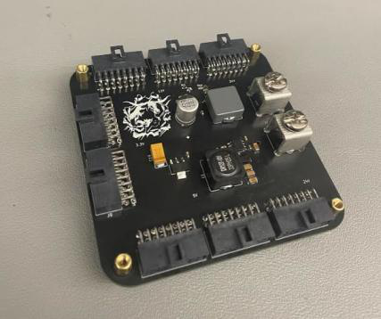
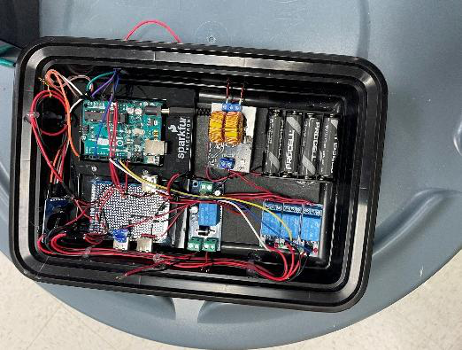
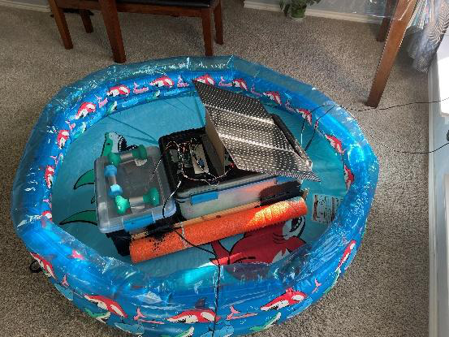

Skip to content
Bipul Padhy
Home
Projects
About
Resume
Projects
Research & Texas Guadaloop
Synchronous rectifier

Guadaloop LV Board
SiC inverter & coil estimation
Wireless charging
Texas Guadaloop · In progress
Earlier projects

The Algae Eater

The Water Guardian